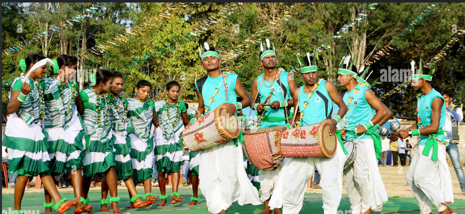
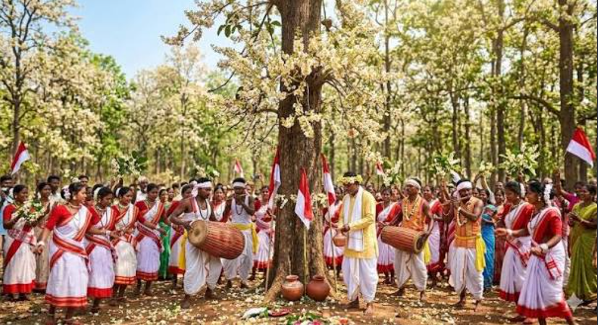
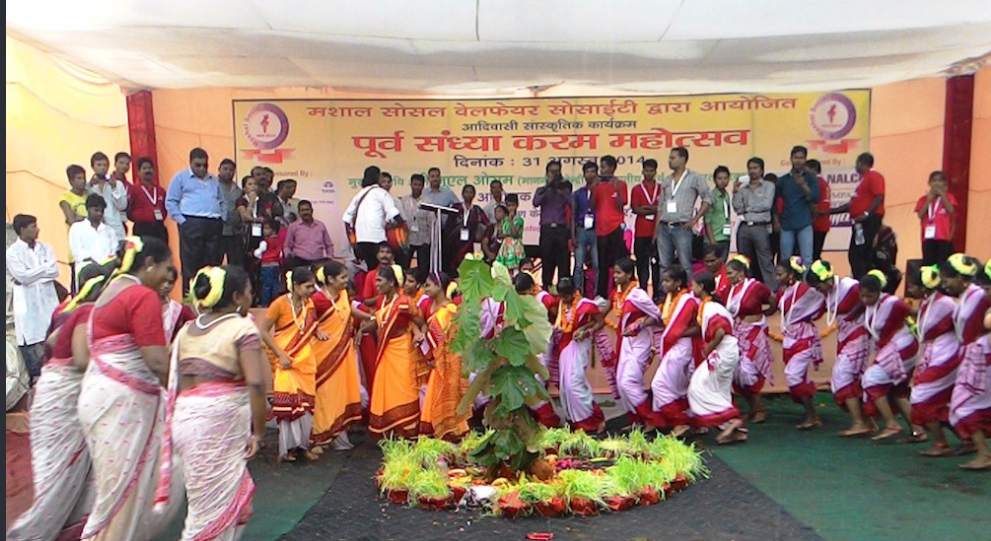
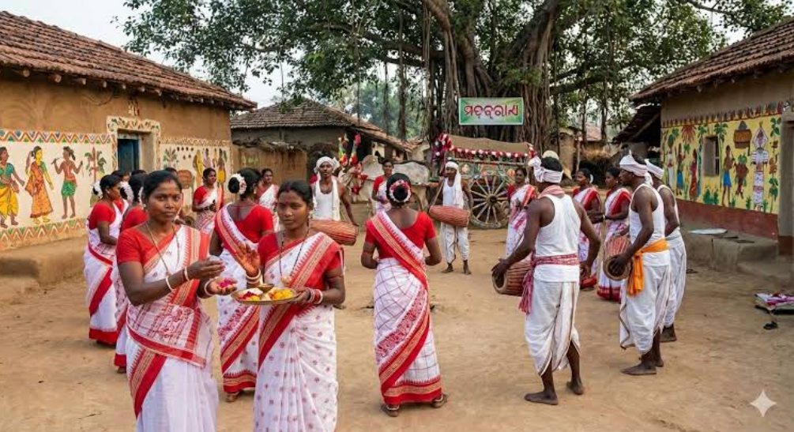
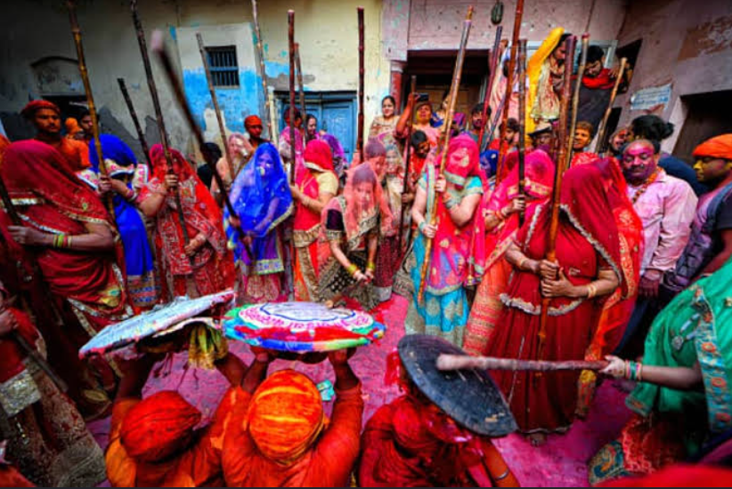

JHARKHAND TRIABL MUSIC-VIDEO PAGE

HOME | INSTRUMENTS | TRIBAL MUSIC | FESTIVALS | VIDEO
About Jharkhand Tribal Music Videos
Jharkhnad tribal music is closely connected with traditional dance, festivals and community celebrations. Videos are a useful way to see traditional musical instruments, songs, dances and cultural performances.
Traditional instruments such as Mandar,Dhol, Nagara, Dhamsa and Bansuri can be seen in different cultural performances. Traditional dances are often performed in groups along with songs and music.
1. Jharkhand Tribal Music

Watch traditional Jharkhand tribal music performances on Youtube.
▶️ WATCH JHARKHAND TRIBAL MUSIC
2. Jharkhand Tribal Dance

Traditional tribal dance is performed with songs and traditional musical instruments.
▶️ WATCH JHARKHAND TRIBAL DANCE
3. Jharkhnad Tribal Songs

Traditional songs are an important part of jharkhnad's tribal culture. They are performed during festivals, weddings and community celebrations.
▶️ WATCH JHARKHAND TRIBAL SONGS
4. Sarhul Festival Video

Sarhul is an important traditional festival associated with nature and spring. Cultural performances include traditional songs and dances.
▶️ WATCH SARHUL FESTIVAL VIDEOS
5. Karma Festival

Karma is a traditional festival celebrated with cultural activities, songs and group dances.
▶️ WATCH KARMA FESTIVAL VIDEOS
6. Sohrai Festival

Sohrai is associated with harvest and cattle-related traditions. It is an important cultural celebration.
▶️ WATCH SOHRAI FESTIVAL VIDEOS
7. Fagua Festival

Fagua is associated with the spring season and traditional songs and dances.
▶️ WATCH FAGUA FESTIVAL VIDEOS
Why Watch Tribal Music Videos?
- To learn about jharkhand's tribal culture.
- To see traditional musical instruments.
- To learn about traditional dances.
- To understand festival celebrations.
- To learn about traditional songs
- To understand the cultural heritage of jharkhand.
Conclusion
Videos help us understand traditional music, dance, festivals and musical instruments in a visual way. Jharkhand tribal music videos provide an oppourtunity to learn about the rich cultural traditions of the state.
Explore other pages
HOME PAGEMUSICAL INSTRUMENTS
TRIBAL MUSIC
FESTIVALS
Project Topic: Jharkhnad Tribal Music System